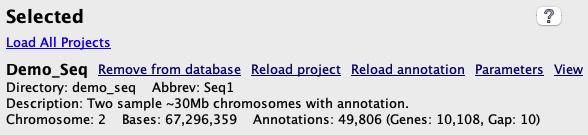

The original SyMAP was written for diverse plant genomes with short introns, but has been modified to work for the long introns of mammalian genomes, and less diverse genomes.
| Start SyMAP | ||
| 1. Build database | 2. Project Parameters | 3. Pair Parameters |
Start SyMAP
| To start SyMAP, type at the command line: ./symap
To view the command line options: ./symap -h | For the first time user of SyMAP, see:
|

1. Build database
| Selected | Available Synteny | Function buttons | Go to top |
1.a Selected
The projects selected from the| ♦ If there is any project not loaded to the database, you will see: | |
|
| Load all projects that have not been loaded yet. |
| ♦ If a project is not loaded to the database, you will see: | |
|
| |
|
| Loads the sequence and optional annotations to the database. After loading results,
always verify them by selecting the |
|
| This brings up a panel of parameters, see Project Parameters.
After the project is loaded, you can still change the |
| ♦ If a project is loaded into the database, you will see: | |
|
| The projects and its synteny pairs will be removed from the database, but the files stay on disk. |
|
| If For either option, it executes |
|
| Removes the annotation from the database then load the annotations.
This does not effect the alignment, so they do not have to be redone.
The |
|
| This brings up the Project Parameters panel. |
For any action that will remove the project or alignments from disk, a popup will occur to confirm that you want this done! If it will be removing multiple alignment directories, it will prompt on each one.
1.b Available Syntenies
Sequence alignments are performed with MUMmer3, but can be changed to use MUMmer4 (see SyMAP MUMmer).This section shows a table with the status of alignments between the selected loaded projects. Each cell in the table represents a pair of projects and the cell contains a status code showing whether or not that pair has been aligned (codes are listed below). Note that the table shows each pair cell twice, but only the lower cells are activated.
Clicking on a cell selects that pair of projects (the cell will be highlighted in green), and the buttons that can be selected are activated.
| Code | Description |
| ✔ | Synteny for this project pair is ready to view. |
| A | The MUMmer alignment has been performed but the synteny computation has not been run. This status occurs if a pair is completed but then annotations are re-loaded for one of the projects, or if the MUMmer files have been added by the user. |
| ? | The alignment have not been completed. In this case, select |
| The alignment has not been started. |
See Pair Parameters for additional information on the
1.c Function Buttons
| Align&Synteny (A&S) Synteny usually implies Cluster&Synteny as the process has 2 distinct algorithms. | |
|
|
Run (or complete) the synteny computation for all pairs in the |
|
| Run (or complete) the If the pair is already complete, the button label changes to If you wish to rerun the MUMmer alignment, first use the |
|
| If you have changed the |
|
| Set the pair parameters for the selected pair cell . |
For the remaining display buttons, see User Guide.
1.d CPU and Verbose
- If checked, detailed summary information is written as it processes the MUMmer files. The information is written both to the terminal and the logs/<proj-to-proj>/symap.log file.
- If this is not checked, it will write status information repeatedly on the same terminal line.
- See Demo examples.
- It is not saved as a parameter. This can also be turned on using a command line argument: symap -v
2. Project Parameters
| Parameter panel | Display | Load project | Load annotation | GFF Attributes | Save | Go to top |
2.a Parameter panel
|
Click the Parameters link for a project to open the parameters panel shown on the lower right.
Make sure these two parameters are correct before running the alignment:
data/seq/<project-name>/sequence data/seq/<project-name>/annotationSee input for a description of the input files. |

|
2.b Display
| New values take immediate effect on |  |
{kind=link}
| Parameter | Description | Default Value | Shown |
| |
Category label for the project. This is only used to group projects on the
left side of the Category labels must be composed of only letters, numbers, dash, underscore, or period. Either select an existing label from the drop-down or enter a new one in the text box. Do NOT enter the same label with different capitalization -- it may mess-up. | Uncategorized | |
| | A user-friendly name for the project.
Shorter names will work better in the displays. Names must be composed of only letters, numbers, dash, underscore, period. It must be unique over all case-insensitive | ||
| | A name this is exactly 4 characters.
Names must be composed of only letters, numbers, dash, underscore, period.
Uniqueness is not required over other | Last 4 characters of | |
| | Description of the project.
Do NOT use quotes, backslash or #. | New project | |
| | How to refer to the sequences. | Chromosome | |
| | This applies to the annotation attributes columns shown in the | 50 | -- |
2.c Load project
The following parameters are under the
The term "Group" is used for any FASTA sequence type, e.g. chromosome, scaffold, contig.
This option sounds trivial but is important for a good display, so please read carefully the following.
| 
|
This must be an integer, commas are allowed (e.g. 1,000,000).
This is the minimum length of the FASTA sequence that will be loaded; smaller sequences will be ignored. Note that annotations
for ignored sequences will also be ignored, but some warning messages will be printed to the terminal.
See xToSymap Length for help with setting this parameter.
Select the input FASTA sequence file(s), or directories of sequence files.
For formatting, see Sequence files.
Default location: data/seq/<project-name>/sequence
If any either the sequence files or
▸ If the project has already been loaded,
▸ If
2.d Load annotation
The following parameters are under the
A comma separated list of keywords. This can be used to reduce the annotation attribute keywords
shown in the
Select the input GFF3-formatted annotation files corresponding to your sequences. Note, using
a GFF3 file directly can cause problems if it does not conform to what SyMAP expects; see
Annotation files.
Annotation is optional but highly recommended. Default location: data/seq/<project-name>/annotation
If either of the above are changed:
▸ If the annotation has already been loaded,
▸ If
2.e GFF Attributes
This section gives details on what GFF attributes are displayed in SyMAP, which refers to them as annotations.The gene annotation is shown on the 2D display and as columns in the Queries results table. The attributes (annotations) comes from the last column of the GFF file. The attributes are a keyword=value list, e.g.
ID=gene-AT1G01010;Name=NAC001;ID=rna-NM_099983.2;product=NAC domain containing protein 1Defaults: Generally, all genes in a file have the same keywords, in which case, use the defaults. This will cause the entire attribute to be shown for the gene in the
If there are many different keywords in the attribute list, this causes too many columns in the
2.f Saving project parameters
Before the project is loaded, the parameters are saved to the filedata/seq/<project-name>/params.txtThe params.txt file parameters are shown on the
When the project is loaded, all parameters are saved to the database except the
Any parameter that does not have the default value will be shown on the
3. Pair Parameters
| Parameter panel | Alignment | Cluster Hits | Synteny | Save | MUMmer parameters | Go to top |
3.a Parameter panel
The Available Syntenies section at the beginning explains the table in the lower right. The following provides more information in the context of the pair parameters.
The table on the right has cells that have the following completed:
|
{kind=link}
|
Alignment will not be redone if the cell contains an A. This is important because MUMmer is very time-consuming, but the synteny computation is not (see timing results); hence, one can make changes to the cluster or synteny parameters and re-run without redoing the alignments.
Select a pair cell in the If a ✔ or A in pair cell exists and the parameters for a section are changed, do the following:
The parameters are described in the following 3 sections: Alignment, Cluster hits and Synteny. |

|
3.b Alignment
Preparing the sequences
| Parameter | Description | Default |
|
By default, all sequences of the 1st genome are concatenated into one file
and then multiple files are created from the 2nd genome to be searched against the first.
For the 2nd genome, sequential short sequences are put into one file until the file length is >60M.
See below for timing differences. The exception is self-synteny, where all chromosomes are written to their own file, so | On | |
| Mask out all non-genic parts of the sequences before running MUMmer (gene annotation must
be provided).
The <abbrev>, which is set in the Project parameters popup Both sequences may both be masked, which results in very fast execution and gene-based synteny. If | Off |
| Concatenated | Not concatenated | |
48819 hits 334 synteny blocks 46319 gene hits 38334 synteny hits Finished in 1 hour 8 minutes |
48846 hits 334 synteny blocks 46348 gene hits 38345 synteny hits Finished in 1 hour 35 minutes |
MUMmer parameters
The default MUMmer parameter seems to work fine with SyMAP, so probably do not need changing.| Parameter | Description | Default |
| | Arguments for PROmer. See MUMmer parameters. | - |
| | Arguments for NUCmer. See MUMmer parameters. | - |
| | Arguments to use when aligning a chromosome to itself. | - |
| | Use PROmer for all alignments. | Off |
| | Use NUCmer for all alignments. | Off |
1 BEWARE: Entered PROmer and NUCmer arguments are NOT checked for correctness.
2When self-alignment is performed, standard arguments are used when comparing different chromosomes. However, additional arguments may be desired when a chromosome sequence is run against itself, e.g. --nosimplify.
3 By default, PROmer is used for alignments between different projects, while NUCmer is used for self alignments.
3.c Cluster Hits
| Algo1 vs Algo2 with hints | Parameter description | Pseudo and Piles | Go to top |
3.c.I Algo1 vs Algo2
| Pros | This is an generic algorithm that has knowledge of genes versus intergenic hits.
It is recommended for ordering sequence contigs and when there are little or no gene annotation. It must be used for self-synteny. It has been used on 100's of genome comparisons. |
| Cons | It does not distinguish between exon and intron hits. It is more likely to miss good homologous gene pairs. |
| Parameters | It only has one parameter, which is easier to run but there is no control over what hits are filtered. |
| Pros | This is a new algorithm with explicit knowledge of gene pairs and their exon-intron structure.
When there is good gene annotations for both genomes, this is definitely the superior algorithm. |
| Cons | It does not perform self-synteny.
It does not work when a given chromosome is split over multiple MUMmer files; this will NOT happen when SyMAP generates the MUMmer files. This is also a "Pro" as it takes less memory. |
| Parameters | It has two set of parameters, hence, more control over results than |
Wrong strand The wrong strand is when all hits in a cluster are to the same strand (++/--) yet the cluster aligns to two genes on the different strands (+-/-+), or vice versa.
Algo1 does include these hits. You can view them in the
Algo2 does NOT include these hits. You can request to view the potential hits
during the
Hints about parameter settings
Hint for
Hint for
→ Suggestion: For large genomes, experiment with the parameters on just one pair of the chromosomes. (You can use xToSymap for the split.)
→ Using the v5.6.0 algorithm, I have experimented with the datasets (1) human, chimpanzee, mouse (2) Arabidopsis, Brassica rapa, Brassica oleracea. Only B. rapa to B. oleracea needed parameter adjustment: the number of G1 hits was over 200k, which is way more than typical; by increasing all parameters a small amount, this reduced to just over 100k.
3.c.II Parameter description

| The image on the left shows the defaults. The exception is:
|
| Parameter | Description | ||||||||||
| If selected, the un-annotated ends of hits will be assigned a pseudo number. This is explained below in Pseudo genes. | |||||||||||
| | It will retain the top N hits of a pile of overlapping hits (Pile of Hits), as well as all hits with score at least 80% of the Nth hit. | ||||||||||
| |
Increase a scale to filter out more clustered hits, decrease to filter out less.
→A clustered hit must pass multiple rules regarding coverage. For example, the | ||||||||||
| | • This ONLY applies when there is a pile of overlapping hits (Pile of Hits); it tells the algorithm what type of cluster hits to retain if they are in a pile. • Hits are filtered before pile analysis. • Intergenic-intergenic pile hits, and any unchecked categories, are filtered as described in the next row. | ||||||||||
| | |||||||||||
3.c.III Pseudos and Piles
Pseudo genes{kind=link}
If
| Pros | |
| Cons |
|
If comparing more than 2 species, it makes the most sense to have them all numbered or not numbered (though a mix will work).
Piles of Hits
| The below image shows a pile of hits on the left (Cabb C5)
that link to repetitive genes on the right (Arab Chr02). These are important to keep.
The right image shows a pile of hits in an intergenic region (Cabbagge Chr03) to multiple other regions (B.rapa Chr01).
There are MANY occurrence of repeats like this in the MUMmer file, which is why these piles
must be filtered; if they are not, the synteny algorithm does not perform well.
|
{kind=link}
{kind=link}
3.d Synteny

| The image on the left shows the defaults. The one exception is that |
| Parameter | Description |
| | Minimum number of anchors required to define a synteny block. |
| | This uses the
|
| | All hits in a block must have hits of the same orientation ('+/+' or '-/-') or different orientation ('+/-' or '-/+'). |
| |
See Synteny results for comparison of using the different synteny parameters. The following is a brief comparison of three images of the same regions when evaluated with the following 3 parameter sets:
Default (one block)
In the last image, the reverse orientation block is embedded in another block
{kind=link}
Order against
For draft sequences, they may be ordered against another project. See Ordering details.| The | 
|
If the draft has been aligned to the
Hints about synteny parameter settings
It is easier to experiment with synteny parameters since
→ Suggestion: For large genomes, experiment with the parameters on just one or two pairs of the chromosomes; you can use xToSymap for the split. Note: the synteny results of one or two chromosomes will be slightly different compared to whole genome synteny.
3.e Save
Lower-left drop-down
This is shown in the image right above on the right.| If the pair has a blank in the | |
| If the pair has an A in the | |
|
If the pair has a ✔ in the If you have only changed synteny parameters, select this option. | |
|
If the pair has a ✔ in the If you only want the pseudos number, select this option (see Pseudos). |
- Select
Save after changing this. Manager : TheSelected pair button will have its label replace to reflect the drop-down setting, as follows:Align&Synteny → Selected Pair
Clust&Synteny → Selected Redo
Synteny Only → Synteny Only
Number Pseudo → Pseudo Only
Saving pairs parameters
Before thedata/seq_results/<proj1-to-proj2>/params.txtOnce the
The file parameters are shown on the pair
Any parameter not the default will be shown on the
BEWARE: If you run
3.f MUMmer parameters
The arguments for MUMmer are NOT checked for correctness.To see the parameters for the default MUMmer V3 on MacOS, from the symap directory:
./ext/mummer/mac/mummer -h ./ext/mummer/mac/promer -h ./ext/mummer/mac/nucmer -hTo see the parameters for the default MUMmer V3 on Linux:
./ext/mummer/linux/mummer -h ./ext/mummer/linux/promer -h ./ext/mummer/linux/nucmer -hIf you compiled V4 in the /ext directory:
./ext/mummer4/m4/bin/mummer -h ./ext/mummer4/m4/bin/promer -h ./ext/mummer4/m4/bin/nucmer -hFor a detail discussion of MUMmer running in SyMAP, see MUMmer.
After running MUMmer, all alignment files are removed except the ".mum" file; to prevent removal,
execute
./symap -mum.
| Go to top |
Email Comments To: cas1@arizona.edu